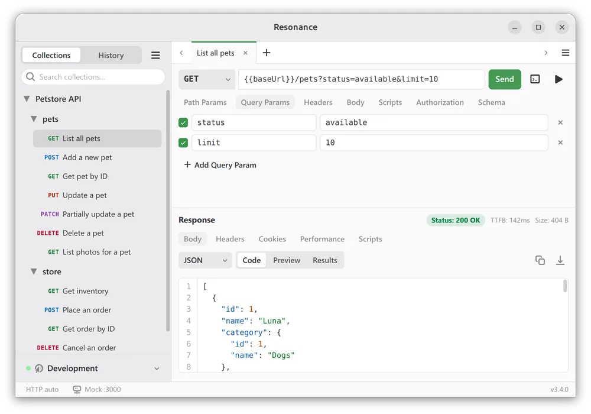

01
Send requests across six protocols
REST, GraphQL, gRPC, WebSocket, SSE and MQTT share one editor, one sidebar and one set of environments.
- Auth per request, folder or collection: Bearer, Basic, API Key, OAuth 2.0 with auto-refresh, Digest, NTLM, AWS SigV4
- Responses as trees, queried with JSONPath or XPath, validated against a JSON Schema
- Timing split into DNS, TCP, TLS, first byte and transfer
- Any request as code in cURL, Python, JavaScript, Node.js, Go, PHP, Ruby or Java
